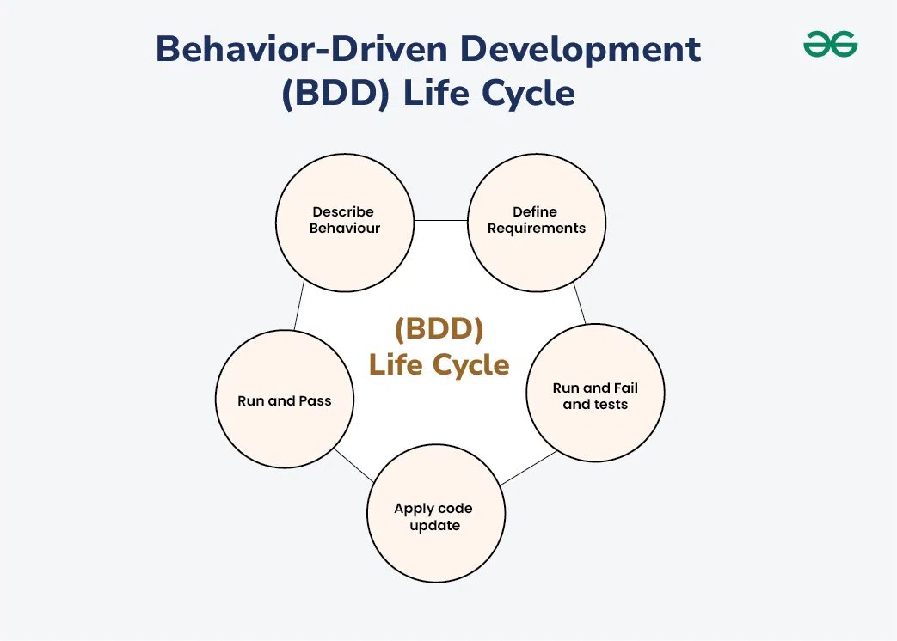

Behavior-driven development hõlmab tarkvaratestide nimetamist,
kasutades koodi käitumise kirjeldamiseks domeeni keelt .
BDD hõlmab domeenispetsiifilise keele (DSL) kasutamist,
kasutades loomulikke konstruktsioone (nt ingliskeelseid
lauseid), mis võivad väljendada käitumist ja oodatavaid tulemusi.
Toetajad väidavad, et see julgustab tarkvaraprojekti arendajate,
kvaliteedi tagamise ekspertide ja klientide esindajate vahelist koostööd.
See julgustab meeskondi kasutama vestlust ja konkreetseid näiteid, et
vormistada ühine arusaam sellest, kuidas rakendus peaks käituma.
BDD-d peetakse tõhusaks tavaks, eriti kui probleemruum on keeruline.
BDD keskendub:
Kust alustada protsessi
Mida testida ja mida mitte
Kui palju ühe korraga testida
Kuidas teste nimetada
Kuidas mõista, miks test ebaõnnestub
Joonis:

Head ja vead
| Head | Vead |
|---|---|
| BDD avab projekti täiendavad võimalused ja keerukused. Kuna see tuvastas stsenaariumid alguses, on projekti lõpus vähem tööd. | Stsenaariumide loomine ja failide haldamine nõuab palju vaeva ja aega. Seega pole see hea lühikese projekti jaoks, mille peame lühikese aja jooksul lõpule viima. Kuid pikaajalise projekti puhul tasub kasutada BDD-lähenemist. |
| See on domeenispetsiifiline keel, mis keskendub teie ettevõtte domeenile ja on oluline ka projekti spetsifikatsioonide määratlemisel. See väldib arusaamatusi ja parandab suhtlust. | Vajame head suhtlust automaatikakoodi välja töötava inimese ja funktsioonifaile kirjutava inimese vahel. Isik, kes kirjutab automatiseerimist, vajab neid faile ja stsenaariume automatiseerimisskripti arendamiseks. Kui neil ei ole failidest vastastikust mõistmist, on projekti raske arendada. |
| Testija kaasamine algab projekti elutsükli algusest, spetsifikatsioonifaasist. Testimine on varuülesanne ja seda saab mängida ainult siis, kui testimiseks on olemas füüsiline toode. Testijatel on analüüsivõime ja nad saavad alustada projekti algusest. | Antud lauseid on väga raske teisendada seadistusjuhisteks ja skriptideks, mis viivad süsteemi teadaolevasse olekusse enne kui laused käivitatakse. |